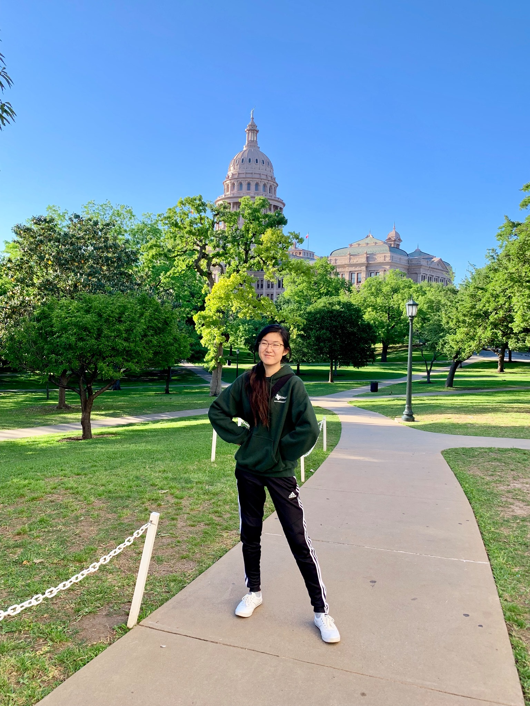

Recent graduate || Programmer
Using JavaScript and Processing, I created a looped animation with my group members: Gerrit Bryan and Julia Maze-England
Hosted on a public server, I created a Phaser game for game development experience with my group members: Edward Mbata and Samuel Shumake
I'm a recent hard-working graduate seeking to enter the workforce and apply my knowledge to create software solutions. I've been trained to have patience in a laboratory setting, work well with others to come up with solutions, and have the diligence to analyze data and draw conclusions.
XCode
Jupyter Lab
GitHub
mySQL
Processing
Python
JavaScript
Swift
August 2016 - May 2020 The University of Texas at Austin
Bachelor of Arts in Neuroscience and Computer Science
Other relevant coursework I have taken: organic chemistry, game development, mobile computing, graphics and visualization, web programming, programming and data analysis for modern neuroscience, neural systems, genetics
Student Researcher The University of Texas at Austin
August 2018 - May 2020
I worked under Dr. Hitoshi Morikawa in his laboratory and trained in electrophysiology. Our lab focused on drug addiction (specifically cocaine) and I managed feeding, running, and performing cocaine and food conditioning in rats.
FRI Research Mentor The University of Texas at Austin
January 2018 - June 2018
I worked as a mentor to demonstrate chemistry techniques, proper use of laboratory equipment, and oversaw laboratory safety for other students. My other responsibilities included synthesizing compounds, restocking all chemicals, and maintaining laboratory cleanliness and safety.
Austin, TX
Phone: +1 512-914-8029
Email: jessicacylau@gmail.com